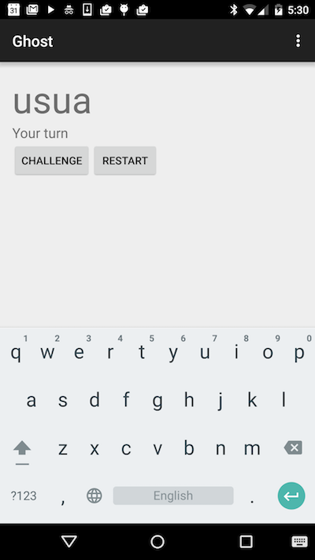

Unit 3
Unit 3 Workshop
This workshop's activity will be a game called Ghost.
Ghost is a word game in which players take turns adding individual letters to a growing word fragment, trying not to be the one to complete a valid word. Each fragment must be the beginning of an actual word, and, for our purposes, we will consider 4 to be the minimum word length. The player who completes a word or creates a fragment that is not the prefix of a word loses the round.
So on player 1's turn, they can:
- challenge player 2's word if they think player 2 has formed a valid word of at least 4 letters. If the fragment is a word, then player 1 wins; if the fragment is not a word, then player 2 wins.
- challenge player 2's word if they think that no word can be formed with the current fragment. Then, player 2 must provide a valid word starting with the current fragment or lose.
- add a letter to move the fragment towards a valid word
- attempt to bluff player 2 by adding a letter that doesn't move the fragment towards a valid word
You can read more about this game on Wikipedia.
The UI for our game will look like this:

Ghost with simple computer player
We've provided a starter project for you with some skeleton code as a starting point.
Continue by editing activity_ghost.xml to create the proper ui. It should contain:
- A large TextView to display the word fragment. Note that we are not using an EditText for this field because the EditText field brings in many default behaviors that are not desirable in this case.
- A smaller TextView to display the game status
- Two buttons, one to challenge the validity of the word that the computer
is creating and one to start a new round. The reset button's handler is provided
as the
onStartmethod.
The provided assets directory contains a file called "1-10000.txt" which contains 10,000 words that we will use as the basis for our dictionary. Feel free to substitute your own word list if you desire.
Initialize the dictionary by loading the content of the file in the
GhostActivity.onCreate method. You can use getAssets().open to access the
dictionary file as an InputStream and feed it to the SimpleDictionary's
constructor to instantiate the dictionary member. We've provided the
implementation of SimpleDictionary's constructor and the isWord method which
is all you need for now.
Since we are not using a standard EditText field, we will need to do some
keyboard handling. Proceed to override the GhostActivity.onKeyUp method.
If the key that the user pressed is not a letter, default to returning the value
of super.onKeyUp(). Otherwise, add the letter to the word fragment. Also check
whether the current word fragment is a complete word and, if it is, update the
game status label to indicate so (this is not the right behavior for the game
but will allow you to verify that your code is working for now).
You should have a working app and can test the basic functionality of your code. If your app is not working as intended, look for error messages in the logcat window of Android Studio. You may also need to add some logging to your app in order to see why it is not working as intended.
If your app is working so far, it's time to take on the computerTurn method.
This method should get the current word fragment and:
- Check if the fragment is a word with at least 4 characters. If so declare victory by updating the game status
- Use the dictionary's
getAnyWordStartingWithmethod to get a possible longer word - If such a word doesn't exist (method returns null), challenge the user's fragment and declare victory (you can't bluff this computer!)
- If such a word does exist, add the next letter of it to the fragment (remember the substring method in the Java string library)
At this stage, you might notice that getAnyWordStartingWith is not implemented
in SimpleDictionary. Write your own implementation of getAnyWordStartingWith
that does the following:
- If prefix is empty return a randomly selected word from the words
ArrayList - Otherwise, perform a binary search over the words
ArrayListuntil you find a word that starts with the given prefix and return it. - If no such word exists, return null
Finally, return to GhostActivity and implement the handler for the Challenge
button. It should:
- Get the current word fragment
- If it has at least 4 characters and is a valid word, declare victory for the user
- otherwise if a word can be formed with the fragment as prefix, declare victory for the computer and display a possible word
- If a word cannot be formed with the fragment, declare victory for the user
Having completed the basic functionality of the game, take some time to apply
what you have learned about preserving an app's state to save both the word
fragment and the current game status message when the app is suspended. The
easiest way to trigger suspension behavior is to cause the screen to rotate
between portrait and landscape mode. You can enable this by editing the line
in AndroidManifest that locks our app in portrait mode. Note that the game
is not playable in landscape mode as the keyboard disappears.
Extensions
There are a couple of ideas for extensions to inspire you:
- Keep track of scores over the course of multiple words. If you do this make sure that these scores survive the app being suspended.
- Simple-superghost lets the human player add a letter to either the end or the start of the fragment. The computer still only adds at the end. You will need to come up with a good UI to let the user select front or back.